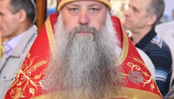

Протодиакон · Регент хора
Максим Кадуров
18 апреля 1982 г. Тобольская духовная семинария, АлтГАКИ (дирижёр академического хора). Хиротония диаконская — 15 февраля 2006 года.
«Пастырь добрый полагает жизнь свою за овец»— Ин 10:11

Закончил Кубанскую духовную семинарию (1997–2000), затем — Киевскую духовную академию (2003). С момента возрождения собора несёт служение настоятеля, духовно окормляя приход и казачество Кубани.
Под его руководством развиваются воскресная школа «Русский щит», молодёжное объединение, сестричество и соборный хор.
18 апреля 1982 г. Тобольская духовная семинария, АлтГАКИ (дирижёр академического хора). Хиротония диаконская — 15 февраля 2006 года.

17 апреля 1989 г. Екатеринодарская духовная семинария. Диаконская хиротония — 31.08.2011, иерейская — 01.05.2012. Награды: набедренник, камилавка, наперсный крест.

Попов Олег Александрович. Окончил КубГАУ (2001). Хиротонии: диаконская — 06.08.2023, иерейская — 03.03.2024.

Клочков Александр Владимирович. Николо-Угрешская духовная семинария, Московская духовная академия. Диаконская хиротония — 06.08.2009, священническая — 16.08.2009. Награды: набедренник, камилавка, наперсный крест.
Все вопросы относительно Крещения, Венчания, Соборования и других Таинств — через свечной киоск собора или настоятеля
Связаться с собором